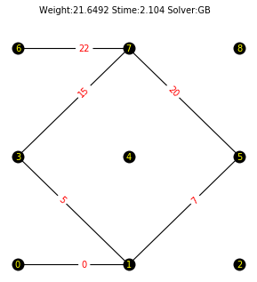
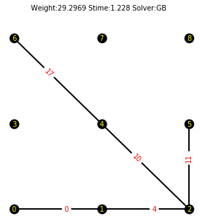
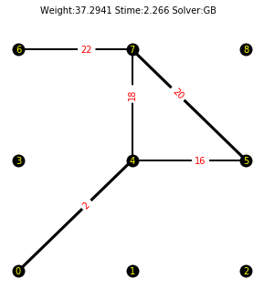
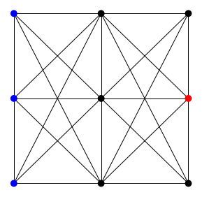
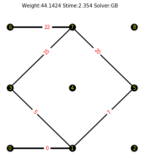
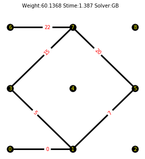
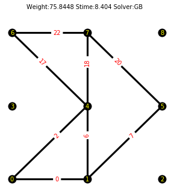
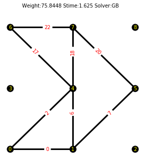

In [3]: runfile('C:/Users/ozt0008/Documents/GitHub/AMmodels/force.py', wdir='C:/Users/ozt0008/Documents/GitHub/AMmodels', post_mortem=True)
Reloaded modules: GSgenerator, MILP, for_gurobi, MINLP, DW
:::: Current Time :::: Tue Sep 8 13:14:17 2020
Below Ground structure has been created for models number 0. Total time for "GS" generating is "0.1" seconds.
1 - Model to solve: (3, 3, [0, 3, 6], [5], [-100])
2 - Potential cross-sections set as: [0, 0.3, 0.4, 0.5]
3 - Nonlinear cs set: [0.3, 0.5, 0.4]
4 - dmax = 0.5 and smax = 300
----------------------------------------( LINEAR MODEL GUROBI )----------------------------------------
--------------------------------------------
Warning: your license will expire in 13 days
--------------------------------------------
Gurobi 9.0.1: timelim=36000
************** LP is done with status "optimal"! Weight is "21.6492" and solver is "gurobi_ampl"**************.
Profile area N1 V1 M1 N2 V2 M2
0 1 0.282743 99.73 0.267993 1.97473 -99.73 -0.267993 0.705203
5 1 0.282743 49.6767 -49.732 -0.172355 -49.6767 49.732 0.725335
7 1 0.282743 50.0533 50 -0.532847 -50.0533 -50 7.00218e-13
15 1 0.282743 49.6767 49.732 0.725335 -49.6767 -49.732 -0.172355
20 1 0.282743 50.0533 -50 7.81319e-13 -50.0533 50 -0.532847
22 1 0.282743 -99.73 0.267993 1.97473 99.73 -0.267993 0.705203
RF in node 0 is: in X direction: "99.73", in Y direction: "0.268" and rotation: "1.9747"
RF in node 3 is: in X direction: "0.0", in Y direction: "99.464" and rotation: "1.4507"
RF in node 6 is: in X direction: "-99.73", in Y direction: "0.268" and rotation: "1.9747"

----------------------------------------( NONLINEAR MODEL GUROBI )-------------------------------------
************************************************************************************************************************
:::: Current Time :::: Tue Sep 8 13:14:20 2020
Below Ground structure has been created for models number 1. Total time for "GS" generating is "0.11" seconds.
1 - Model to solve: (3, 3, [0, 3, 6], [5], [-200])
2 - Potential cross-sections set as: [0, 0.3, 0.4, 0.5]
3 - Nonlinear cs set: [0.3, 0.5, 0.4]
4 - dmax = 0.5 and smax = 300

----------------------------------------( LINEAR MODEL GUROBI )----------------------------------------
--------------------------------------------
Warning: your license will expire in 13 days
--------------------------------------------
Gurobi 9.0.1: timelim=36000
************** LP is done with status "optimal"! Weight is "29.2969" and solver is "gurobi_ampl"**************.
Profile area N1 V1 M1 N2 V2 M2
0 2 0.502655 199.668 0.334589 5.28824 -199.668 -0.334589 -1.94235
4 2 0.502655 199.668 0.334589 1.94235 -199.668 -0.334589 1.40355
10 2 0.502655 199.668 -199.665 -1.40355 -199.668 199.665 1.37345
11 2 0.502655 5.10703e-15 200 -2.57572e-14 -5.10703e-15 -200 -2.57572e-14
17 2 0.502655 199.668 -199.665 -1.37345 -199.668 199.665 1.34335
RF in node 0 is: in X direction: "199.6684", in Y direction: "0.3346" and rotation: "5.2882"
RF in node 3 is: in X direction: "0.0", in Y direction: "0.0" and rotation: "0.0"
RF in node 6 is: in X direction: "-199.6684", in Y direction: "199.6654" and rotation: "1.3433"

----------------------------------------( NONLINEAR MODEL GUROBI )-------------------------------------
************************************************************************************************************************
:::: Current Time :::: Tue Sep 8 13:14:21 2020
Below Ground structure has been created for models number 2. Total time for "GS" generating is "0.11" seconds.
1 - Model to solve: (3, 3, [0, 3, 6], [5], [-300])
2 - Potential cross-sections set as: [0, 0.3, 0.4, 0.5]
3 - Nonlinear cs set: [0.3, 0.5, 0.4]
4 - dmax = 0.5 and smax = 300

----------------------------------------( LINEAR MODEL GUROBI )----------------------------------------
--------------------------------------------
Warning: your license will expire in 13 days
--------------------------------------------
Gurobi 9.0.1: timelim=36000
************** LP is done with status "optimal"! Weight is "37.2941" and solver is "gurobi_ampl"**************.
Profile area N1 V1 M1 N2 V2 M2
2 3 0.785398 299.527 298.285 -2.02145 -299.527 -298.285 -10.4021
16 2 0.502655 298.331 2.51044 15.9133 -298.331 -2.51044 9.19117
18 2 0.502655 1.19677 295.775 -5.51117 -1.19677 -295.775 -6.45655
20 3 0.785398 298.331 -297.49 -9.19117 -298.331 297.49 0.781334
22 2 0.502655 -299.527 1.71504 11.4752 299.527 -1.71504 5.67522
RF in node 0 is: in X direction: "299.5273", in Y direction: "298.285" and rotation: "-2.0215"
RF in node 3 is: in X direction: "0.0", in Y direction: "0.0" and rotation: "0.0"
RF in node 6 is: in X direction: "-299.5273", in Y direction: "1.715" and rotation: "11.4752"

----------------------------------------( NONLINEAR MODEL GUROBI )-------------------------------------
************************************************************************************************************************
:::: Current Time :::: Tue Sep 8 13:14:24 2020
Below Ground structure has been created for models number 3. Total time for "GS" generating is "0.11" seconds.
1 - Model to solve: (3, 3, [0, 3, 6], [5], [-400])
2 - Potential cross-sections set as: [0, 0.3, 0.4, 0.5]
3 - Nonlinear cs set: [0.3, 0.5, 0.4]
4 - dmax = 0.5 and smax = 300

----------------------------------------( LINEAR MODEL GUROBI )----------------------------------------
--------------------------------------------
Warning: your license will expire in 13 days
--------------------------------------------
Gurobi 9.0.1: timelim=36000
************** LP is done with status "optimal"! Weight is "44.1424" and solver is "gurobi_ampl"**************.
Profile area N1 V1 M1 N2 V2 M2
0 3 0.785398 396.963 3.41524 27.2048 -396.963 -3.41524 6.94761
5 2 0.502655 196.539 -196.585 -2.70524 -196.539 196.585 3.16186
7 2 0.502655 200.424 200 -4.24237 -200.424 -200 -1.90958e-13
15 2 0.502655 196.539 196.585 3.16186 -196.539 -196.585 -2.70524
20 2 0.502655 200.424 -200 -1.31006e-13 -200.424 200 -4.24237
22 3 0.785398 -396.963 3.41524 27.2048 396.963 -3.41524 6.94761
RF in node 0 is: in X direction: "396.9633", in Y direction: "3.4152" and rotation: "27.2048"
RF in node 3 is: in X direction: "0.0", in Y direction: "393.1695" and rotation: "6.3237"
RF in node 6 is: in X direction: "-396.9633", in Y direction: "3.4152" and rotation: "27.2048"

----------------------------------------( NONLINEAR MODEL GUROBI )-------------------------------------
************************************************************************************************************************
:::: Current Time :::: Tue Sep 8 13:14:27 2020
Below Ground structure has been created for models number 4. Total time for "GS" generating is "0.12" seconds.
1 - Model to solve: (3, 3, [0, 3, 6], [5], [-500])
2 - Potential cross-sections set as: [0, 0.3, 0.4, 0.5]
3 - Nonlinear cs set: [0.3, 0.5, 0.4]
4 - dmax = 0.5 and smax = 300

----------------------------------------( LINEAR MODEL GUROBI )----------------------------------------
--------------------------------------------
Warning: your license will expire in 13 days
--------------------------------------------
Gurobi 9.0.1: timelim=36000
************** LP is done with status "optimal"! Weight is "45.7764" and solver is "gurobi_ampl"**************.
Profile area N1 V1 M1 N2 V2 M2
2 3 0.785398 498.927 495.393 -10.5462 -498.927 -495.393 -24.7914
16 3 0.785398 495.47 6.07358 43.181 -495.47 -6.07358 17.5549
18 3 0.785398 3.45755 489.32 -18.3896 -3.45755 -489.32 -16.186
20 3 0.785398 495.47 -493.926 -17.5549 -495.47 493.926 2.1237
22 3 0.785398 -498.927 4.60667 32.0045 498.927 -4.60667 14.0622
RF in node 0 is: in X direction: "498.9271", in Y direction: "495.3933" and rotation: "-10.5462"
RF in node 3 is: in X direction: "0.0", in Y direction: "0.0" and rotation: "0.0"
RF in node 6 is: in X direction: "-498.9271", in Y direction: "4.6067" and rotation: "32.0045"

----------------------------------------( NONLINEAR MODEL GUROBI )-------------------------------------
************************************************************************************************************************
:::: Current Time :::: Tue Sep 8 13:14:28 2020
Below Ground structure has been created for models number 5. Total time for "GS" generating is "0.11" seconds.
1 - Model to solve: (3, 3, [0, 3, 6], [5], [-600])
2 - Potential cross-sections set as: [0, 0.3, 0.4, 0.5]
3 - Nonlinear cs set: [0.3, 0.5, 0.4]
4 - dmax = 0.5 and smax = 300

----------------------------------------( LINEAR MODEL GUROBI )----------------------------------------
--------------------------------------------
Warning: your license will expire in 13 days
--------------------------------------------
Gurobi 9.0.1: timelim=36000
************** LP is done with status "optimal"! Weight is "60.1368" and solver is "gurobi_ampl"**************.
Profile area N1 V1 M1 N2 V2 M2
0 3 0.785398 595.538 4.4236 32.6236 -595.538 -4.4236 11.6124
5 3 0.785398 294.662 -295.576 -2.85574 -294.662 295.576 12.0014
7 3 0.785398 300.876 300 -8.75668 -300.876 -300 8.96603e-05
15 3 0.785398 294.662 295.576 12.0012 -294.662 -295.576 -2.85616
20 3 0.785398 300.876 -300 -8.96603e-05 -300.876 300 -8.75706
22 3 0.785398 -595.537 4.42351 32.6233 595.537 -4.42351 11.6118
RF in node 0 is: in X direction: "595.5375", in Y direction: "4.4236" and rotation: "32.6236"
RF in node 3 is: in X direction: "-0.0001", in Y direction: "591.1527" and rotation: "24.0026"
RF in node 6 is: in X direction: "-595.5375", in Y direction: "4.4237" and rotation: "32.6237"
----------------------------------------( NONLINEAR MODEL GUROBI )-------------------------------------
************************************************************************************************************************
:::: Current Time :::: Tue Sep 8 13:14:33 2020
Below Ground structure has been created for models number 6. Total time for "GS" generating is "0.11" seconds.
1 - Model to solve: (3, 3, [0, 3, 6], [5], [-700])
2 - Potential cross-sections set as: [0, 0.3, 0.4, 0.5]
3 - Nonlinear cs set: [0.3, 0.5, 0.4]
4 - dmax = 0.5 and smax = 300

----------------------------------------( LINEAR MODEL GUROBI )----------------------------------------
--------------------------------------------
Warning: your license will expire in 13 days
--------------------------------------------
Gurobi 9.0.1: timelim=36000
************** LP is done with status "optimal"! Weight is "60.1368" and solver is "gurobi_ampl"**************.
Profile area N1 V1 M1 N2 V2 M2
0 3 0.785398 694.794 5.16087 38.0609 -694.794 -5.16087 13.5478
5 3 0.785398 343.772 -344.839 -3.33171 -343.772 344.839 14.0016
7 3 0.785398 351.022 350 -10.2161 -351.022 -350 0.000112082
15 3 0.785398 343.774 344.841 14.0016 -343.774 -344.841 -3.33187
20 3 0.785398 351.022 -350 -0.000112082 -351.022 350 -10.2164
22 3 0.785398 -694.794 5.16086 38.0609 694.794 -5.16086 13.5477
RF in node 0 is: in X direction: "694.7938", in Y direction: "5.1609" and rotation: "38.0609"
RF in node 3 is: in X direction: "-0.0001", in Y direction: "689.6783" and rotation: "28.0035"
RF in node 6 is: in X direction: "-694.7937", in Y direction: "5.1609" and rotation: "38.0609"

----------------------------------------( NONLINEAR MODEL GUROBI )-------------------------------------
************************************************************************************************************************
:::: Current Time :::: Tue Sep 8 13:14:34 2020
Below Ground structure has been created for models number 7. Total time for "GS" generating is "0.11" seconds.
1 - Model to solve: (3, 3, [0, 3, 6], [5], [-800])
2 - Potential cross-sections set as: [0, 0.3, 0.4, 0.5]
3 - Nonlinear cs set: [0.3, 0.5, 0.4]
4 - dmax = 0.5 and smax = 300
----------------------------------------( LINEAR MODEL GUROBI )----------------------------------------
--------------------------------------------
Warning: your license will expire in 13 days
--------------------------------------------
Gurobi 9.0.1: timelim=36000
************** LP is done with status "optimal"! Weight is "75.8448" and solver is "gurobi_ampl"**************.
Profile area N1 V1 M1 N2 V2 M2
0 3 0.785398 403.359 6.51808 40.5205 -403.359 -6.51808 24.6603
2 3 0.785398 391.407 393.482 11.8208 -391.407 -393.482 8.92494
6 3 0.785398 2.96146 -393.482 -20.6897 -2.96146 393.482 -8.92494
7 3 0.785398 400.397 400 -3.97066 -400.397 -400 -1.77636e-13
17 3 0.785398 391.407 -393.482 8.92494 -391.407 393.482 11.8208
18 3 0.785398 2.96146 393.482 -8.92494 -2.96146 -393.482 -20.6897
20 3 0.785398 400.397 -400 -1.81188e-13 -400.397 400 -3.97066
22 3 0.785398 -403.359 6.51808 40.5205 403.359 -6.51808 24.6603
RF in node 0 is: in X direction: "794.7659", in Y direction: "400.0" and rotation: "52.3413"
RF in node 3 is: in X direction: "0.0", in Y direction: "0.0" and rotation: "0.0"
RF in node 6 is: in X direction: "-794.7659", in Y direction: "400.0" and rotation: "52.3413"

----------------------------------------( NONLINEAR MODEL GUROBI )-------------------------------------
************************************************************************************************************************
:::: Current Time :::: Tue Sep 8 13:14:43 2020
Below Ground structure has been created for models number 8. Total time for "GS" generating is "0.11" seconds.
1 - Model to solve: (3, 3, [0, 3, 6], [5], [-900])
2 - Potential cross-sections set as: [0, 0.3, 0.4, 0.5]
3 - Nonlinear cs set: [0.3, 0.5, 0.4]
4 - dmax = 0.5 and smax = 300

----------------------------------------( LINEAR MODEL GUROBI )----------------------------------------
--------------------------------------------
Warning: your license will expire in 13 days
--------------------------------------------
Gurobi 9.0.1: timelim=36000
************** LP is done with status "optimal"! Weight is "75.8448" and solver is "gurobi_ampl"**************.
Profile area N1 V1 M1 N2 V2 M2
0 3 0.785398 453.778 7.33284 45.5855 -453.778 -7.33284 27.7429
2 3 0.785398 440.333 442.667 13.2984 -440.333 -442.667 10.0406
6 3 0.785398 3.33165 -442.667 -23.2759 -3.33165 442.667 -10.0406
7 3 0.785398 450.447 450 -4.46699 -450.447 -450 -3.46034e-12
17 3 0.785398 440.333 -442.667 10.0406 -440.333 442.667 13.2984
18 3 0.785398 3.33165 442.667 -10.0406 -3.33165 -442.667 -23.2759
20 3 0.785398 450.447 -450 -8.37019e-12 -450.447 450 -4.46699
22 3 0.785398 -453.778 7.33284 45.5855 453.778 -7.33284 27.7429
RF in node 0 is: in X direction: "894.1116", in Y direction: "450.0" and rotation: "58.8839"
RF in node 3 is: in X direction: "0.0", in Y direction: "0.0" and rotation: "0.0"
RF in node 6 is: in X direction: "-894.1116", in Y direction: "450.0" and rotation: "58.8839"

----------------------------------------( NONLINEAR MODEL GUROBI )-------------------------------------
************************************************************************************************************************
In [4]: